Chapter 7: Networked, Distributed & Cloud Storage¶
Most data today lives somewhere other than the computer using it. This chapter follows storage out onto the network: DAS, NAS and SAN; the NFS and SMB file protocols; block versus file versus object and the S3 API; distributed and software-defined systems such as Ceph; parallel file systems for HPC and AI; enterprise arrays and hyperconverged clusters; the big clouds' block, file and object services; Kubernetes storage; the special demands of AI training and inference; and how tiering and lifecycle policies keep costs and risks under control.
7.1 DAS, NAS and SAN: Three Ways to Attach Storage¶
Storage can be plugged straight into one computer (direct-attached storage, DAS), shared as ready-made files over the ordinary network (network-attached storage, NAS), or shared as raw disk blocks over a dedicated storage network (storage area network, SAN). The difference is where the file system lives and how many machines can use the storage.
DAS vs NAS vs SAN
| DAS | NAS | SAN | |
|---|---|---|---|
| Unit shared | Nothing (one host) | Files and folders | Blocks (LUNs) |
| File system runs on | Host | NAS appliance | Host |
| Typical protocol | SATA, SAS, NVMe, USB | NFS, SMB | FC, iSCSI, NVMe-oF |
| Network | None (cable) | Ordinary Ethernet | Dedicated fabric/VLAN |
| Strength | Lowest latency, cheap | Easy sharing | Shared, fast, highly available |
| Typical user | Laptop, DB server | Office, home, media | VM clusters, big databases |
The key question is who runs the file system: the host (DAS, SAN) or the storage box (NAS).
Think of it like…
DAS is a bookshelf in your own room; a NAS is the school library, where you ask the librarian for a book by its title; a SAN is a private warehouse that hands your shop whole empty shelves, and you arrange the books yourself.
Real-world example
Lena runs IT for the fictional Hollis Architecture studio. Each CAD workstation has a fast internal NVMe SSD (DAS) for scratch work. Finished drawings live on a two-controller NAS that 40 staff map as the S: drive over SMB. The studio's virtual-machine cluster boots from LUNs on a small iSCSI SAN, so any host can restart any VM if one server dies.
How it works¶
- DAS: the drive connects over SATA, SAS, NVMe or USB to one host, which formats it and owns it.
- NAS: an appliance runs its own file system and exports folders with NFS or SMB over Ethernet.
- SAN: an array carves its capacity into LUNs (logical units) and presents them as block devices over Fibre Channel, iSCSI or NVMe-oF.
- Zoning and LUN masking decide which hosts may see which LUNs; each host then puts its own file system (or a cluster file system) on top.
- Multipathing software keeps two or more paths to every LUN so a failed cable, switch or controller does not stop I/O.
Who uses it
Infrastructure and storage administrators, VMware and Hyper-V teams, small-office IT, video studios and every data centre build on one or more of these three models.
Key takeaway
Memorise the one-liner: DAS = one host owns blocks; NAS = many hosts share files; SAN = many hosts share blocks over a dedicated network.
Going deeper
- A local NVMe SSD answers in roughly 10-100 microseconds; a well-built SAN or NVMe-oF path adds only tens of microseconds, while NAS adds protocol and metadata round trips, often 0.2-1 ms per operation.
- Most enterprise arrays have two controllers in active-active or ALUA (asymmetric logical unit access) mode; hosts mark paths 'optimised' or 'non-optimised' and send I/O to the owning controller first.
- Fibre Channel zoning is configured on switches by WWPN (World Wide Port Name); LUN masking is configured on the array, and both are needed so a host cannot even see another team's disks.
- Two hosts writing to one SAN LUN with an ordinary file system such as ext4 or NTFS will corrupt it; shared LUNs need a cluster-aware file system such as VMFS, GFS2, OCFS2 or Windows CSV.
- Scale-up arrays add shelves behind a fixed controller pair; scale-out systems add whole nodes so capacity and performance grow together, which is how most modern NAS and object systems scale.
- Unified arrays (for example NetApp ONTAP or Dell PowerStore) serve both NAS and SAN protocols from one pool, so small sites can buy a single box for file shares and VM datastores.
Common mistakes & misconceptions
- Thinking a NAS is just a big USB drive: it is a server with its own OS and file system, and it needs patching, backups and access control.
- Assuming a SAN means Fibre Channel only: iSCSI and NVMe/TCP build SANs over ordinary Ethernet switches.
- Calling RAID a backup: DAS, NAS and SAN all still need separate copies elsewhere, because deletion and ransomware hit every mirror instantly.
Try it: List block devices (DAS/SAN LUNs) and network file systems mounted on a Linux machine¶
lsblk -o NAME,SIZE,TYPE,TRAN,MODEL # TRAN shows sata, nvme, usb, iscsi, fc
findmnt -t nfs,nfs4,cifs,smb3 # mounted NAS shares
# Windows PowerShell
Get-Disk | Select Number,FriendlyName,BusType,Size
Get-SmbMapping
Key memory types, devices, interfaces, standards & tools¶
| Name | What it does | Example |
|---|---|---|
| Direct-attached storage (DAS) Industry term · Concept · Current · Beginner |
Storage connected straight to one computer by SATA, SAS, NVMe or USB, with no network in between. | A database server keeps its transaction log on two internal NVMe SSDs for the lowest possible latency. |
| Network-attached storage (NAS) Industry term · Concept · Current · Beginner |
A file server appliance that shares folders over Ethernet using NFS or SMB; clients see files, not disks. | A dentist's office stores X-ray images on a four-bay NAS that every surgery PC opens as a mapped drive. |
| Storage area network (SAN) Industry term · Concept · Current · Beginner |
A dedicated network that gives servers shared block storage, so each server sees remote LUNs as if they were local disks. | Twelve Hyper-V hosts share a set of 10 TB LUNs over Fibre Channel, letting VMs move live between hosts. |
| Cluster file system (VMFS, GFS2, OCFS2, CSV) VMware, Red Hat, Oracle, Microsoft · File system · Current · Advanced |
A file system that several hosts can mount on the same shared LUN at once, coordinating with distributed locks. | Eight ESXi hosts share one VMFS datastore on a SAN LUN, each locking only the VM files it runs. |
| JBOD / JBOF Industry term · Device · Current · Beginner |
'Just a bunch of disks/flash': an enclosure of drives with no RAID brain, relying on the host or software for protection. | A Ceph cluster attaches 60-drive JBODs over SAS so the software, not a RAID card, handles redundancy. |
| Dual-controller array Industry term · Device · Current · Intermediate |
A storage box with two redundant controllers sharing the same drives, so one can fail or be upgraded without downtime. | During a firmware update controller A takes over all LUNs, B reboots on new code, then they swap back. |
| Multipathing (MPIO, dm-multipath, ALUA) Microsoft, Linux, T10 SPC · Software · Current · Intermediate |
Host software that uses several physical paths to one LUN for failover and load balancing, preferring the owning controller. | multipath -ll on a Linux host shows four paths to each LUN; pulling one cable leaves three active. |
| Unified storage Industry term · Concept · Current · Beginner |
One array that serves both file protocols (NFS, SMB) and block protocols (iSCSI, FC, NVMe-oF) from a shared pool. | A school district buys one unified array for teacher file shares and its VMware datastores. |
| Scale-up vs scale-out Industry term · Concept · Current · Intermediate |
Scale-up adds disks behind fixed controllers; scale-out adds complete nodes so capacity and performance grow together. | A 4-node scale-out NAS becomes 8 nodes, roughly doubling both its throughput and its usable capacity. |
| Home and small-business NAS Synology, QNAP, Asustor, TrueNAS · Product · Current · Beginner |
Ready-made NAS boxes with web interfaces for shares, snapshots, media streaming and cloud backup. | A photographer mirrors two 16 TB drives in a two-bay NAS and backs it up nightly to cloud object storage. |
| Disaggregated storage Industry term · Concept · Emerging · Advanced |
Separating compute servers from storage nodes, linked by a fast fabric, so each can be scaled and upgraded independently. | A GPU cluster reads training data from NVMe-oF storage nodes instead of filling every GPU server with local SSDs. |
7.2 NFS and SMB: Sharing Files Over a Network¶
File-sharing protocols let a computer open, read and save files that physically live on another machine as if they were local. NFS (Network File System) grew up in the Unix and Linux world; SMB (Server Message Block) is the native Windows protocol and is also spoken by macOS and Linux via Samba.

Think of it like…
A file protocol is like a library loan desk: you ask for a book by title, the librarian checks your card, lends it, records who has it, and stops two people scribbling in it at once.
Real-world example
Omar's video-production company has Mac editors and Linux render nodes. The NAS exports the project folder over SMB 3.1.1 for the Macs and over NFSv4.1 for the render farm. When a renderer reads a 40 GB clip, its client opens multiple TCP connections (nconnect=8) and reads in 1 MB chunks, keeping its 25 GbE link busy.
How it works¶
- The server exports a directory (NFS) or a share (SMB) and sets who may access it.
- The client mounts the export or maps the share; authentication happens with Kerberos, NTLM or (for older NFS) trusted host IDs.
- Opening a file returns a handle; reads and writes are sent as protocol requests carrying offsets and lengths.
- Locks, leases or delegations let a client cache data safely until another client needs the same file.
- On close, cached writes are flushed so other clients see the new data (close-to-open consistency).
Who uses it
System and storage administrators, Linux and Windows engineers, media studios, HPC centres and anyone running home directories or shared drives use NFS or SMB daily.
Key takeaway
Remember the ports: NFS uses TCP 2049; SMB uses TCP 445 (and UDP 443 for SMB over QUIC). Never expose either directly to the internet.
Going deeper
- NFSv3 (RFC 1813, 1995) is stateless and relies on separate helper protocols for mounting and locking; NFSv4 (RFC 7530) folds locking in, uses one port, adds ACLs and strong Kerberos security.
- NFSv4.1 (RFC 8881) adds sessions with exactly-once semantics and pNFS, where the metadata server hands clients a 'layout' so they read data directly from many storage nodes in parallel.
- NFSv4.2 (RFC 7862) adds server-side copy, sparse-file support (SEEK_HOLE), space reservation and labeled NFS for SELinux, so copying a 50 GB file can happen entirely on the server.
- SMB 3.0 arrived with Windows Server 2012 and added Multichannel, transparent failover, SMB Direct over RDMA and encryption; SMB 3.1.1 adds pre-authentication integrity and AES-GCM encryption.
- Windows Server 2025 makes SMB over QUIC available in all editions and requires SMB signing for outbound connections by default, which can slow very old NAS boxes that sign inefficiently.
- Kerberos security flavours for NFS are krb5 (authentication only), krb5i (adds integrity checksums) and krb5p (adds encryption); without them NFSv3 trusts whatever user ID the client claims.
Common mistakes & misconceptions
- Leaving SMB 1 enabled 'for an old scanner': SMB 1 enabled the 2017 WannaCry worm; Windows disables it by default, so replace or isolate the device.
- Assuming NFS 'root' is safe: by default servers squash remote root to 'nobody'; disabling root_squash lets any client root rewrite every file.
- Expecting local-disk locking semantics everywhere: mixing NFS and SMB access to the same files needs a NAS that translates locks and permissions carefully.
Try it: Mount an NFS export and map an SMB share (replace server names with your own lab NAS)¶
# Linux: NFSv4.1 with 4 TCP connections
sudo mount -t nfs -o vers=4.1,nconnect=4 nas01:/projects /mnt/projects
nfsstat -m # shows negotiated version and options
# Linux: SMB 3.1.1 share via the kernel cifs client
sudo mount -t cifs //nas01/team /mnt/team -o vers=3.1.1,username=lena
# Windows PowerShell
New-SmbMapping -LocalPath S: -RemotePath \\nas01\team
Get-SmbConnection | Select ServerName,ShareName,Dialect
Key memory types, devices, interfaces, standards & tools¶
| Name | What it does | Example |
|---|---|---|
| NFSv3 IETF RFC 1813 · Protocol · Current · Beginner |
Stateless 1995 version of NFS, still widespread; uses helper protocols (mountd, NLM locking) and trusts client-supplied user IDs. | A VMware cluster mounts an NFSv3 datastore from a NAS because it is simple and widely supported. |
| NFSv4.0 IETF RFC 7530 · Protocol · Current · Intermediate |
Stateful NFS with built-in locking, a single TCP port 2049, rich ACLs, COMPOUND requests and Kerberos security. | A university moves home directories to NFSv4 with Kerberos so students cannot impersonate other UIDs. |
| NFSv4.1 and pNFS IETF RFC 8881 · Protocol · Current · Advanced |
Adds sessions, trunking and parallel NFS, where clients fetch a layout and read data directly from many storage nodes. | A render farm reads frames via pNFS straight from 16 data servers instead of funnelling through one head. |
| NFSv4.2 IETF RFC 7862 · Protocol · Current · Intermediate |
Latest NFS minor version: server-side copy, sparse files, space reservation, application I/O hints and SELinux labels. | cp --reflink on a client triggers a server-side copy, so a 50 GB VM image never crosses the network. |
| nconnect Linux kernel NFS client · Concept · Current · Intermediate |
Mount option that opens several TCP connections to one NFS server, spreading traffic across CPU cores and links. | Adding nconnect=8 lifts a single client's NFS read throughput from about 1.5 to over 4 GB/s on 100 GbE. |
| Kerberos for NFS (krb5, krb5i, krb5p) IETF RFC 4120 / RFC 7530 · Standard · Current · Intermediate |
Security flavours adding strong authentication, then integrity, then full encryption to NFS traffic. | A research lab mounts sensitive genomics data with sec=krb5p so traffic is encrypted across the campus network. |
| SMB 1 / CIFS Microsoft · Protocol · Legacy · Beginner |
The original 1980s-90s SMB dialect; insecure, chatty and disabled by default in modern Windows. | An audit finds SMB 1 still enabled on an old file server and removes it with Disable-WindowsOptionalFeature. |
| SMB 3.0 Microsoft MS-SMB2 · Protocol · Current · Intermediate |
2012 SMB dialect adding Multichannel, SMB Direct, transparent failover for clustered shares, and encryption. | Hyper-V hosts store VM disks on an SMB 3 scale-out file server and survive a node failure without VM crashes. |
| SMB 3.1.1 Microsoft MS-SMB2 · Protocol · Current · Intermediate |
Current SMB dialect with pre-authentication integrity, AES-128/256 encryption, compression and signing improvements. | Get-SmbConnection shows Dialect 3.1.1 when a Windows 11 laptop maps a Windows Server 2025 share. |
| SMB Multichannel Microsoft · Concept · Current · Intermediate |
Automatically uses several network interfaces or RSS queues for one SMB session, adding throughput and failover. | A server with two 25 GbE NICs copies files at nearly 50 Gb/s and keeps working if one cable is pulled. |
| SMB Direct Microsoft (SMB over RDMA) · Protocol · Current · Advanced |
SMB carried over RDMA network cards (iWARP, RoCE, InfiniBand) for very low CPU use and latency. | Storage Spaces Direct nodes replicate data over SMB Direct on 100 GbE RoCE adapters. |
| SMB over QUIC Microsoft / IETF QUIC RFC 9000 · Protocol · Emerging · Intermediate |
SMB tunnelled in QUIC on UDP 443 with TLS 1.3, letting remote users reach shares without a VPN. | Field engineers open the head-office share from hotel Wi-Fi over QUIC, with certificates instead of a VPN client. |
| Samba Samba Team (open source) · Software · Current · Intermediate |
Open-source SMB server and client suite for Linux and Unix, also able to act as an Active Directory domain controller. | A Linux file server running Samba shares a folder that Windows users map exactly like a Windows share. |
| Leases, oplocks and delegations MS-SMB2 / NFSv4 · Concept · Current · Advanced |
Server-granted promises that let a client cache file data and locks locally until another client needs the file. | An Excel user gets a write lease; when a colleague opens the file, the server breaks the lease and flushes changes. |
7.3 Block, File and Object: Three Ways to Address Data¶
Block storage hands out numbered fixed-size chunks and leaves organisation to the user. File storage gives you folders and named files with permissions and locking. Object storage keeps whole objects, each with a unique key and descriptive metadata, in a flat namespace reached over HTTP.
Block vs file vs object
| Block | File | Object | |
|---|---|---|---|
| Address | LBA (sector number) | Path /dir/file | Bucket + key |
| Access method | SCSI, NVMe, iSCSI | POSIX, NFS, SMB | HTTP REST (S3) |
| Update style | In place, any block | In place, byte range | Replace whole object |
| Metadata | None | Fixed (owner, times) | Rich, user-defined |
| Typical latency | Microseconds | Sub-millisecond | Milliseconds |
| Scale | Volumes up to ~64 TiB | Petabytes | Exabytes, trillions of objects |
| Best for | Databases, VM disks | Shared folders, HPC | Backups, media, data lakes |
Moving right trades fine-grained, low-latency access for scale, cost and metadata.
Think of it like…
Block storage is a box of numbered Lego bricks; file storage is a filing cabinet with labelled folders; object storage is a valet coat check: hand over the coat, get a ticket, and later present the ticket to get the whole coat back.
Real-world example
Northwind Clinic's EHR database sits on block volumes because it needs tiny, fast random writes. Doctors' scanned letters go to an SMB file share so staff can browse folders. Ten years of MRI images, 800 TB in all, live in object storage: each image is written once, tagged with patient and study IDs, and read occasionally through an HTTPS API.
How it works¶
- Block: the host addresses logical block addresses (LBAs), usually 512-byte or 4 KiB sectors, and a file system or database decides what each block means.
- File: a server or local file system maps paths like /reports/q3.pdf to blocks and enforces permissions, locks and directories.
- Object: an application sends PUT with a key and metadata; the system stores the object, protects it with replicas or erasure coding and returns an ETag.
- Reads use the address style of each model: LBA ranges, file path plus offset, or bucket plus key over HTTP.
- Many modern platforms expose more than one model over the same pool, for example Ceph (block, file and object) or Azure Data Lake (blob plus hierarchical file namespace).
Who uses it
Cloud architects, data engineers, DBAs, backup designers and application developers choose between block, file and object every time they place data.
Key takeaway
Interview shortcut: block = lowest latency and in-place updates; file = shared hierarchical access with POSIX semantics; object = cheapest at massive scale, rich metadata, whole-object writes over HTTP.
Going deeper
- Object stores usually protect data with erasure coding across failure domains; Amazon S3 is designed for 99.999999999% (eleven nines) durability by storing data across at least three Availability Zones for most classes.
- Since December 2020 Amazon S3 gives strong read-after-write consistency for all PUTs and DELETEs, removing the old eventual-consistency surprises that early data lakes had to work around.
- POSIX semantics (rename, append, byte-range locks, mmap) are expensive at scale; that is why object stores drop them and why mounting a bucket with tools like s3fs or Mountpoint for Amazon S3 has limitations.
- Data lakes store columnar files such as Apache Parquet on object storage and add table formats like Apache Iceberg, Delta Lake or Apache Hudi to provide transactions, schema evolution and time travel.
- Content-addressable storage names objects by a cryptographic hash of their contents, as Git and many backup tools do, giving automatic deduplication and tamper evidence.
Common mistakes & misconceptions
- Running a busy database on object storage directly: objects cannot be updated in place, so every small change means rewriting whole objects.
- Treating 'flat namespace' as having folders: the slashes in an object key are just characters; listing a 'folder' is a prefix query.
- Assuming object storage is always slow: modern all-flash object systems serve hundreds of GB/s, which is why AI pipelines use them.
Try it: Feel the difference on your own laptop¶
# Block: read raw sectors from a disk image (no file system involved)
dd if=/dev/zero of=disk.img bs=1M count=64
xxd -s 0 -l 64 disk.img
# File: path, permissions and metadata
stat disk.img
# Object: a whole value addressed by key over HTTP (public example object)
curl -sI https://www.example.com/ | grep -i -E 'etag|content-length|last-modified'
Key memory types, devices, interfaces, standards & tools¶
| Name | What it does | Example |
|---|---|---|
| Block storage Industry term · Concept · Current · Beginner |
Storage addressed as numbered fixed-size blocks with no built-in meaning; the host's file system or database organises them. | An EBS volume or SAN LUN appears as /dev/nvme1n1, which the admin formats with XFS for PostgreSQL. |
| File storage Industry term · Concept · Current · Beginner |
Storage presented as hierarchical directories and named files with permissions, locks and timestamps. | Engineers share CAD assemblies on an NFS export where folders mirror the project structure. |
| Object storage Industry term · Concept · Current · Beginner |
Storage of whole objects addressed by a key in a flat namespace, with user metadata, reached over an HTTP API. | A streaming service keeps 30 million video segments as objects and serves them through a CDN. |
| Data lake Industry term · Concept · Current · Beginner |
A central store of raw and processed data in open file formats, usually on object storage, shared by many analytics tools. | Sales, web and sensor data land in one S3-based lake that Spark, Trino and BI dashboards all query. |
| POSIX file semantics IEEE Std 1003.1 · Standard · Current · Advanced |
Rules for open, read, write, rename, append and locking that Unix programs expect from a file system. | A legacy simulation needs atomic rename, so it runs on a parallel file system instead of a mounted bucket. |
| Flat namespace and prefixes Object storage · Concept · Current · Beginner |
Object keys are plain strings; 'folders' are just shared prefixes before a delimiter such as '/'. | Listing prefix scans/2026/10/ returns keys beginning with that text, even though no folder exists. |
| Object metadata Object storage · Concept · Current · Beginner |
System fields (size, ETag, timestamps) plus user-defined key-value tags stored with each object. | Each MRI object carries x-amz-meta-study-id, letting the indexer find studies without opening files. |
| Hierarchical namespace for objects Azure Data Lake Storage Gen2, Google Cloud · Technology · Current · Advanced |
An option that adds real directories to an object store so renames and directory deletes are atomic and fast. | A Spark job renaming 50,000 output files finishes instantly because the directory rename is a single metadata operation. |
| Mountpoint for Amazon S3 AWS (open source) · Software · Current · Intermediate |
A file client that mounts an S3 bucket for high-throughput reads and sequential new-file writes, without full POSIX support. | A training job reads image shards through a Mountpoint path but cannot edit files in place. |
| Apache Parquet Apache Software Foundation · Format · Current · Intermediate |
Columnar, compressed file format that lets analytics engines read only the columns a query needs. | Converting 2 TB of CSV logs to Parquet shrinks them to about 300 GB and speeds queries tenfold. |
| Apache Iceberg Apache Software Foundation · Format · Current · Advanced |
Open table format that adds ACID transactions, schema evolution and time travel to files stored on object storage. | Analysts query yesterday's version of a sales table with Iceberg time travel after a bad load. |
| Content-addressable storage Industry term · Concept · Current · Advanced |
Naming stored data by a hash of its content so identical data is stored once and any change gives a new name. | A backup tool splits files into chunks named by SHA-256; unchanged chunks are never uploaded twice. |
7.4 The S3 API and Object Storage Concepts¶
The S3 API began as Amazon Simple Storage Service's web interface in 2006 and became the common language of object storage. You store objects in buckets using HTTP verbs such as PUT, GET, LIST and DELETE, and add features like versioning, lifecycle rules and write-once locks.

Think of it like…
S3 is like a giant self-storage company with standard rules everywhere: you rent a unit (bucket), label every box (key), keep a logbook of old versions, set rules to move boxes to cheaper sheds later, and can padlock some boxes so nobody — not even the manager — can throw them out early.
Real-world example
Kai builds a photo app for the fictional Lakeside Camera Club. Uploads go straight from phones to a bucket using presigned URLs, so photos never pass through the app server. Versioning protects against accidental overwrite, a lifecycle rule moves originals older than 90 days to an infrequent-access class, and Object Lock keeps the club's audit exports immutable for seven years.
How it works¶
- Create a bucket with a globally unique name in a chosen region and block public access by default.
- Upload with PUT for small objects or multipart upload for big ones (parts of 5 MiB to 5 GiB, up to 10,000 parts).
- Every request is signed with Signature Version 4 (an HMAC over the request) using the caller's access key, or authorised by a temporary presigned URL.
- Bucket policies, IAM policies and ACL settings decide who may do what; encryption at rest is on by default (SSE-S3).
- Turn on versioning, lifecycle rules, replication, event notifications and Object Lock as the data's value grows.
Who uses it
Cloud and backend developers, DevOps engineers, backup vendors, data engineers and security teams all work with the S3 API, whether on AWS or on S3-compatible stores such as Ceph RGW, NetApp StorageGRID or Cloudflare R2.
Key takeaway
Know the numbers: single PUT up to 5 GiB, multipart parts 5 MiB-5 GiB, at most 10,000 parts, and maximum object size 50 TB since December 2025 (previously 5 TB).
Going deeper
- A PUT replaces the whole object; there is no partial update. The ETag is often the MD5 of a single-part object, but for multipart uploads it is a hash of part hashes plus a '-N' suffix.
- Versioning keeps every version under a version ID; a DELETE just adds a 'delete marker', so lifecycle rules must also expire noncurrent versions or costs keep growing.
- Object Lock needs versioning and offers governance mode (privileged users can override) and compliance mode (nobody, including the root account, can shorten retention), plus open-ended legal holds.
- Conditional writes with If-None-Match: * (2024) let applications create an object only if the key does not exist yet, enabling simple locking and safe concurrent writers without an external database.
- S3 request rates scale per prefix: at least 3,500 writes and 5,500 reads per second per partitioned prefix, so very hot workloads spread keys across many prefixes.
- Since January 2023 new S3 objects are encrypted with SSE-S3 by default; SSE-KMS adds customer-managed keys and audit trails, and SSE-C lets the customer supply the key on each request.
Common mistakes & misconceptions
- Making a bucket public to share one file: use a presigned URL with a short expiry instead; public buckets cause many real-world data leaks.
- Forgetting abandoned multipart uploads: unfinished parts are billed until removed, so add a lifecycle rule to abort incomplete uploads after a few days.
- Assuming S3-compatible means identical: third-party stores often lack features such as Object Lock modes, Select or event notifications, so test the calls you rely on.
Try it: Basic S3 operations with the AWS CLI (works against AWS or a local S3-compatible lab store via --endpoint-url)¶
aws s3 mb s3://lena-lab-2026
aws s3 cp report.pdf s3://lena-lab-2026/reports/2026/report.pdf
aws s3 ls s3://lena-lab-2026/reports/ --recursive
aws s3api put-bucket-versioning --bucket lena-lab-2026 \
--versioning-configuration Status=Enabled
aws s3 presign s3://lena-lab-2026/reports/2026/report.pdf --expires-in 600
Key memory types, devices, interfaces, standards & tools¶
| Name | What it does | Example |
|---|---|---|
| Bucket AWS S3 API · Concept · Current · Beginner |
The top-level container for objects, with a unique name, a home region, and its own policies and settings. | The bucket camera-club-originals in eu-west-1 holds every uploaded full-resolution photo. |
| Object key AWS S3 API · Concept · Current · Beginner |
The full name of an object inside a bucket, up to 1,024 bytes of UTF-8, often shaped like a path. | photos/2026/10/08/IMG_0412.jpg is one key; the slashes simply group keys under shared prefixes. |
| PUT, GET, HEAD, LIST, DELETE AWS S3 REST API · Protocol · Current · Beginner |
The core HTTP operations to write, read, inspect, enumerate and remove objects in a bucket. | HEAD returns size and ETag without downloading; ListObjectsV2 pages through results 1,000 keys at a time. |
| Multipart upload AWS S3 API · Concept · Current · Intermediate |
Uploading a large object as up to 10,000 independently retried parts that are stitched together at the end. | A 200 GB database dump uploads as 3,200 parts of 64 MiB over eight parallel streams. |
| Presigned URL AWS S3 API (SigV4) · Concept · Current · Intermediate |
A URL carrying a time-limited signature that lets someone without credentials GET or PUT one specific object. | The app issues a 10-minute presigned PUT URL so a phone uploads its photo directly to the bucket. |
| S3 Versioning AWS S3 API · Concept · Current · Beginner |
Keeps every version of an object under a version ID, so overwrites and deletes can be undone. | A user overwrites budget.xlsx; the admin restores the previous version ID in seconds. |
| Lifecycle rules AWS S3 API · Concept · Current · Intermediate |
Bucket rules that automatically move objects to cheaper classes or delete them after a set age. | Logs move to an infrequent-access class after 30 days, to an archive class after 180, and are deleted after 400. |
| Object Lock retention modes AWS S3 API; SEC 17a-4 assessed · Concept · Current · Intermediate |
Write-once-read-many protection preventing deletion or overwrite of object versions until a retention date passes. | A broker keeps trade records in compliance mode for six years; governance mode lets a security officer override test data. |
| Bucket policy and IAM AWS IAM policy language · Concept · Current · Intermediate |
JSON policies stating which principals may perform which S3 actions on which resources, under what conditions. | A policy allows s3:GetObject only from the company VPC endpoint and denies any request without TLS. |
| Block Public Access AWS · Concept · Current · Beginner |
Account- and bucket-level switches that override any setting that would make data publicly readable. | New buckets have Block Public Access on by default, preventing an intern's ACL mistake from exposing files. |
| Server-side encryption (SSE-S3, SSE-KMS, SSE-C) AWS · Concept · Current · Intermediate |
Encryption at rest applied by the service, with keys managed by S3, by a KMS key you control, or supplied per request. | A bank uses SSE-KMS so every decryption is logged in CloudTrail and keys can be disabled instantly. |
| Conditional writes AWS S3 API · Concept · Current · Advanced |
PUTs that succeed only if the key does not exist (If-None-Match) or still matches an expected ETag (If-Match). | Two workers race to write job-42/result.json; only the first succeeds, the second gets 412 Precondition Failed. |
| S3 Replication (CRR / SRR) AWS S3 · Concept · Current · Intermediate |
Automatic asynchronous copying of new objects to another bucket in a different region or the same region. | Cross-Region Replication copies every new invoice to a bucket 800 km away for disaster recovery. |
| S3-compatible object stores Ceph RGW, NetApp StorageGRID, Cloudflare R2, Backblaze B2, Wasabi · Product · Current · Beginner |
Services and software that implement the S3 API so S3 tools and SDKs work against them. | A backup appliance targets an on-premises StorageGRID bucket using exactly the same S3 settings it would use for AWS. |
7.5 Software-Defined and Distributed Storage: Ceph, HDFS and Friends¶
Software-defined storage (SDS) is storage whose intelligence lives in software running on ordinary servers rather than in a proprietary box. Distributed storage spreads data across many such servers, copying or encoding it so that whole machines can fail without losing anything.
Think of it like…
Instead of one giant bank vault, imagine a town where every household keeps a few sealed envelopes and a shared rulebook says exactly which three houses hold each envelope — lose a house and the town quietly re-copies its envelopes elsewhere.
Real-world example
The fictional Riverside University replaces an ageing array with 12 commodity servers running Ceph, each holding 12 HDDs and two NVMe SSDs. Researchers get S3 buckets through the RADOS Gateway, OpenStack VMs get RBD block devices, and labs mount CephFS. When a server's motherboard dies, Ceph rebuilds its 140 TB of placement groups across the other 11 servers in a few hours.
How it works¶
- Install storage software on commodity servers full of disks (each disk usually runs one storage daemon).
- A small odd-numbered set of monitor nodes keeps the authoritative cluster map and uses a consensus algorithm (Paxos in Ceph) to agree on it.
- A placement algorithm such as Ceph's CRUSH or a consistent-hashing ring computes where each object belongs, so no central lookup table is needed.
- Each object is stored as several replicas or as erasure-coded fragments spread across failure domains (disks, hosts, racks).
- When a disk or node fails, the survivors detect it via heartbeats and re-create the missing copies automatically.
- Clients talk directly to the storage daemons holding their data, so performance grows as nodes are added.
Who uses it
Cloud and OpenStack operators, research computing teams, telecom providers, big-data platforms and Kubernetes platform engineers run SDS and distributed storage.
Key takeaway
Remember Ceph's daemons: MON (cluster map, quorum), MGR (metrics and dashboard), OSD (one per disk, stores data), MDS (metadata for CephFS) and RGW (S3/Swift gateway).
Going deeper
- Ceph stores objects in placement groups (PGs); CRUSH maps each PG to a set of OSDs using the cluster topology, so clients compute data locations themselves instead of asking a metadata server.
- Three-way replication costs 200% extra raw capacity; an erasure-coded 8+3 pool costs about 37.5% extra yet survives three simultaneous failures, at the price of more CPU and slower small writes.
- BlueStore, Ceph's default back end since Luminous (2017), writes directly to raw devices, keeps metadata in RocksDB and checksums every block, avoiding a double-journal through a local file system.
- Ceph names releases after sea creatures: Reef (v18, 2023), Squid (v19, 2024) and Tentacle (v20, first released November 2025); each stable release is supported for roughly two years.
- HDFS splits files into large blocks (128 MiB by default) stored three times across DataNodes, with a NameNode holding the namespace in memory; Hadoop 3 added erasure coding and NameNode high availability.
- MinIO's open-source community edition was stripped of its admin console in 2025, stopped shipping binaries in October 2025 and is no longer maintained; MinIO now sells AIStor, so new labs often use Ceph RGW, Garage or SeaweedFS instead.
- GlusterFS lost its main sponsor when Red Hat Gluster Storage reached end of life on 31 December 2024; upstream activity has slowed sharply, so treat it as legacy for new designs.
Common mistakes & misconceptions
- Building Ceph on three nodes with one network and expecting enterprise speed: production clusters need separate fast networks, enough RAM per OSD (about 4 GB+) and careful failure-domain design.
- Running a monitor quorum with an even number of nodes: two monitors cannot survive one failure; use 3 or 5.
- Assuming replication protects against deletion: every replica deletes instantly; snapshots and off-cluster backups are still required.
Try it: Try Ceph on a single Ubuntu VM (lab only — not for production)¶
sudo snap install microceph
sudo microceph cluster bootstrap
sudo microceph disk add loop,4G,3 # three 4 GB loop-file OSDs
sudo ceph status
sudo ceph osd tree
sudo ceph df
Key memory types, devices, interfaces, standards & tools¶
| Name | What it does | Example |
|---|---|---|
| Software-defined storage (SDS) Industry term · Concept · Current · Beginner |
Storage features — pooling, protection, snapshots, protocols — delivered by software on commodity servers instead of proprietary arrays. | A telecom builds 5G core storage from standard x86 servers running SDS, avoiding lock-in to one array vendor. |
| Ceph Ceph Foundation (Linux Foundation) · Software · Current · Intermediate |
Open-source distributed storage providing block (RBD), file (CephFS) and object (RGW) interfaces from one cluster. | CERN and many universities run multi-petabyte Ceph clusters behind OpenStack clouds. |
| RADOS Ceph · Technology · Current · Advanced |
Reliable Autonomic Distributed Object Store: Ceph's self-healing object layer underneath every interface. | rados -p mypool put test.txt ./test.txt writes an object straight into RADOS without any gateway. |
| CRUSH Ceph (Weil et al., 2006) · Concept · Current · Advanced |
Ceph's pseudo-random placement algorithm that maps data to disks from the cluster map and failure-domain rules. | A CRUSH rule 'one replica per rack' keeps three copies in three racks, surviving a rack power failure. |
| Placement groups (PGs) Ceph · Concept · Current · Advanced |
Buckets of objects that Ceph places and recovers as a unit, so the cluster tracks thousands of PGs instead of billions of objects. | ceph pg stat shows 512 PGs active+clean; after a disk fails some briefly show degraded until recovery ends. |
| BlueStore Ceph · Software · Current · Advanced |
Ceph's storage back end writing directly to raw disks, with RocksDB metadata, checksums and inline compression. | An OSD puts its RocksDB on NVMe and its data on a 20 TB HDD to speed up metadata-heavy small writes. |
| Ceph RGW Ceph · Software · Current · Intermediate |
RADOS Gateway: an HTTP service giving Ceph an S3- and Swift-compatible object storage API. | A university offers students S3 buckets from RGW for coursework datasets at a fraction of public-cloud cost. |
| IBM Storage Ceph IBM · Product · Current · Intermediate |
IBM's supported Ceph distribution, which took over from Red Hat Ceph Storage when IBM moved the team in 2023. | A bank buys IBM Storage Ceph to get 24x7 support and certified hardware for its private-cloud object store. |
| HDFS Apache Hadoop · Software · Legacy · Intermediate |
Hadoop Distributed File System: big files split into 128 MiB blocks replicated across DataNodes, with a NameNode for metadata. | A retailer's older Hadoop cluster still runs nightly Spark jobs on HDFS while new data lands in object storage. |
| MinIO / AIStor MinIO, Inc. · Product · Legacy · Intermediate |
Popular S3-compatible store whose open-source edition stopped being maintained in 2025-2026; development continues as commercial AIStor. | A team running an old MinIO container plans migration because it no longer receives community security fixes. |
| GlusterFS Gluster community (formerly Red Hat) · Software · Legacy · Intermediate |
Scale-out file system aggregating server directories ('bricks') into one namespace; commercial support ended in 2024. | An oVirt cluster built on Gluster in 2019 is being migrated to Ceph because Gluster is no longer supported. |
| SeaweedFS Open source (Chris Lu) · Software · Current · Intermediate |
Distributed store optimised for billions of small files, offering S3, FUSE and WebDAV access. | An image-hosting startup stores 2 billion thumbnails in SeaweedFS with fast O(1) disk lookups. |
| Garage Deuxfleurs (open source) · Software · Emerging · Intermediate |
Lightweight S3-compatible object store designed for small, geo-distributed self-hosted clusters. | A community radio station replicates its archive across three volunteers' homes using Garage. |
| Consistent hashing Karger et al., 1997 · Concept · Current · Advanced |
Placing keys on a hash ring so adding or removing a node moves only a small fraction of the data. | OpenStack Swift's ring moves about 1/N of objects when a twelfth node joins an eleven-node cluster. |
7.6 Parallel File Systems for HPC and AI¶
A parallel file system stripes each file across many storage servers so thousands of compute nodes can read and write the same namespace at once. It separates metadata (names, permissions, layouts) from the data itself, letting bandwidth grow with every server added.
Think of it like…
Instead of one checkout lane with a long queue, a parallel file system opens 200 lanes and splits your shopping across them, with one manager at the door telling you which lanes hold which items.
Real-world example
Asha manages storage for the fictional Northshore Climate Institute. A weather model running on 2,000 nodes writes a 40 TB snapshot every hour. Their Lustre file system stripes each output file over 64 object storage targets, so the snapshot lands at about 400 GB/s in under two minutes and researchers keep computing.
How it works¶
- A client asks the metadata server to open /scratch/run7/out.nc and receives its layout: which data servers hold which stripes.
- The client then reads and writes stripes directly and in parallel to those data servers over InfiniBand or fast Ethernet.
- Metadata servers handle names, permissions and locks; data servers handle the bulk bytes.
- A distributed lock manager keeps clients from overwriting each other's byte ranges.
- Adding data servers adds bandwidth; adding metadata servers adds file-create and lookup rates.
Who uses it
HPC system administrators, AI infrastructure engineers, national laboratories, weather centres, oil-and-gas, genomics and media-rendering teams run parallel file systems.
Key takeaway
Interview point: parallel file systems split metadata from data — the metadata service is usually the bottleneck for millions of small files, not raw bandwidth.
Going deeper
- Lustre has object storage servers (OSS) exporting object storage targets (OSTs), metadata servers exporting MDTs, a management server (MGS) and the LNet networking layer; 2.17.0 shipped at the end of 2025, while 2.15 is the long-term-support branch.
- IBM Storage Scale (formerly GPFS, first released in 1998) spreads both data and metadata across all nodes and adds policy-driven tiering, AFM caching between sites and native S3 access.
- VAST Data's DASE design gives every stateless front-end server access to all shared NVMe flash, while WEKA's NeuralMesh (launched June 2025 as the evolution of WekaFS) runs storage as containerised microservices.
- DAOS, born at Intel for Optane, is now governed by the DAOS Foundation under the Linux Foundation; at Argonne's Aurora it reached roughly 1 TB/s write throughput in MLPerf Storage v2.0 using 128 servers.
- The IO500 list, published at ISC and SC each year, ranks HPC storage using a mix of IOR bandwidth tests and mdtest metadata tests, rewarding balanced systems rather than raw throughput alone.
- Wide striping helps big files but hurts tiny ones: many sites set a stripe count of 1 for directories of small files and use Progressive File Layouts that widen striping as a file grows.
Common mistakes & misconceptions
- Using a parallel file system as a home directory full of tiny files: millions of small files overload metadata servers; use NFS homes and parallel scratch.
- Treating scratch space as safe storage: HPC scratch is usually unprotected and purged after 30-90 days; copy results to project or archive storage.
- Assuming more stripes is always faster: striping a 1 MB file over 64 servers adds 64 lock and network operations for no gain.
Try it: Inspect and set striping on a Lustre client (on an HPC cluster that uses Lustre)¶
lfs df -h # capacity per MDT and OST
lfs getstripe /scratch/me/big.dat
lfs setstripe -c 8 -S 4M /scratch/me/newdir # 8 OSTs, 4 MiB stripes
lfs find /scratch/me -size +10G -type f
Key memory types, devices, interfaces, standards & tools¶
| Name | What it does | Example |
|---|---|---|
| Parallel file system Industry term · Concept · Current · Beginner |
A shared POSIX file system that stripes files across many servers so many clients get aggregate bandwidth at once. | Ten thousand MPI ranks write a single checkpoint file collectively at hundreds of GB/s. |
| Lustre OpenSFS / EOFS community, DDN (Whamcloud) · File system · Current · Intermediate |
Open-source parallel file system used by many of the world's largest supercomputers. | A national lab's 700 PB Lustre scratch file system serves 9,000 compute nodes over InfiniBand. |
| DDN EXAScaler DDN · Product · Current · Intermediate |
DDN's commercial Lustre-based appliance line, also the engine behind Google Cloud Managed Lustre. | An AI cloud provider deploys EXAScaler appliances certified for NVIDIA DGX SuperPOD clusters. |
| IBM Storage Scale (GPFS) IBM · File system · Current · Intermediate |
Mature parallel file system with distributed metadata, policy-based tiering, multi-site caching and NFS/SMB/S3 access. | A car maker shares crash-simulation results between Germany and the US using Storage Scale AFM caching. |
| BeeGFS ThinkParQ · File system · Current · Intermediate |
Parallel file system known for easy installation, separating metadata and storage services on Linux servers. | A university cluster runs BeeGFS on eight servers to give 400 nodes about 40 GB/s of scratch bandwidth. |
| WEKA NeuralMesh WEKA · Product · Current · Advanced |
Software-defined parallel file system for NVMe flash, rebuilt in 2025 as containerised microservices for AI workloads. | An AI start-up runs NeuralMesh on its GPU servers' local NVMe drives to feed training and KV-cache offload. |
| VAST Data VAST Data · Product · Current · Advanced |
All-flash platform using a disaggregated shared-everything (DASE) design for NFS, SMB, S3 and database access. | A GPU cloud serves training data over NFS and checkpoints over S3 from the same VAST cluster. |
| DAOS DAOS Foundation (Linux Foundation) · Software · Emerging · Advanced |
Distributed Asynchronous Object Storage: an open-source, user-space store for NVMe that bypasses the kernel for very low latency. | Argonne's Aurora supercomputer uses DAOS to checkpoint huge models in seconds. |
| DDN Infinia DDN · Product · Emerging · Advanced |
DDN's software-defined object and key-value data platform aimed at AI pipelines and multi-tenant clouds. | A sovereign-AI cloud uses Infinia as an S3 data lake feeding GPU clusters. |
| Hammerspace Hammerspace · Product · Emerging · Advanced |
A global data platform that uses standard parallel NFS (pNFS) to present one namespace across many storage systems and sites. | A studio unifies NAS boxes in London and Vancouver into one namespace that render nodes reach via pNFS. |
| Striping Industry term · Concept · Current · Intermediate |
Splitting a file into fixed-size chunks placed round-robin across several storage targets. | A 4 GiB file with stripe size 4 MiB and count 8 places 128 MiB on each of eight OSTs. |
| Metadata server (MDS) Lustre, CephFS, BeeGFS · Component · Current · Intermediate |
Server that handles names, directories, permissions and file layouts, separate from bulk data servers. | A genomics pipeline creating 50 million tiny files is limited by MDS create rate, not by disk bandwidth. |
| Burst buffer HPC term · Concept · Current · Advanced |
A fast flash tier that absorbs bursts of checkpoint writes and drains them to slower capacity storage later. | Checkpoints hit an NVMe burst buffer in 30 seconds, then trickle to disk while computation resumes. |
| IO500 IO500 Foundation · Resource · Current · Advanced |
Twice-yearly ranking of HPC storage systems using standard bandwidth (IOR) and metadata (mdtest) workloads. | Students compare IO500 entries to see which file systems excel at metadata versus bandwidth. |
7.7 Enterprise Storage Arrays and Vendors¶
An enterprise storage array is a purpose-built system — controllers, drives and specialised software — that serves block, file or object storage to many servers with high availability, snapshots, replication and data reduction. A handful of vendors dominate the market, and each has its own product families and terminology.
Think of it like…
Buying an enterprise array is like hiring a professional warehouse with forklifts, alarms, insurance and a 24-hour manager, instead of stacking boxes in your own garage.
Real-world example
Maria, a storage engineer at the fictional Harbourview Insurance, compares two all-flash arrays for 600 TB of VM and database data. Vendor A guarantees 4:1 data reduction and non-disruptive controller upgrades on a subscription; vendor B offers synchronous replication between two data centres 40 km apart. She runs a proof of concept with fio and production database traces before choosing.
How it works¶
- Hosts connect to dual (or more) redundant controllers over FC, iSCSI, NVMe-oF, NFS, SMB or S3.
- Controllers cache writes in mirrored, battery- or flash-protected memory and acknowledge quickly.
- Data is deduplicated, compressed and written to flash or HDD protected by RAID or erasure coding.
- Software adds snapshots, clones, replication, encryption, quality of service and ransomware detection.
- Telemetry phones home to the vendor's cloud for support, analytics and capacity planning.
Who uses it
Storage administrators, infrastructure architects, presales and solutions engineers, and support engineers at vendors and resellers work with enterprise arrays daily.
Key takeaway
Learn one platform deeply (ONTAP, Purity, PowerStore) — the concepts transfer — and be ready to explain usable vs raw capacity and effective capacity after data reduction.
Going deeper
- Raw capacity is the sum of drive sizes; usable capacity subtracts RAID/erasure overhead, spares and system space; effective capacity multiplies usable by expected data reduction, often quoted as 3:1-5:1 for mixed VMs and databases.
- Active-active synchronous replication (for example NetApp SnapMirror active sync, Everpure ActiveCluster, Dell PowerMax SRDF/Metro) lets a volume be read and written at two sites, usually within about 100 km and a few milliseconds round trip.
- Pure Storage renamed itself Everpure in early 2026 (ticker PSTG unchanged); its FlashArray, FlashBlade, Purity OS, Evergreen subscriptions and Portworx keep their product names.
- NetApp's AFX, announced in October 2025, disaggregates ONTAP so controllers and NVMe capacity shelves scale separately up to 128 nodes, aimed at AI clusters; classic AFF, ASA and FAS systems continue alongside.
- Industry analysts such as Gartner and IDC rank enterprise storage vendors; Dell, NetApp, Huawei, Everpure, HPE, IBM and Hitachi Vantara are usually among the leaders, with order shifting by segment and year.
- Consumption models (Everpure Evergreen//One, HPE GreenLake, Dell APEX, NetApp Keystone) charge per used terabyte with performance SLAs, and include controller refreshes so arrays need no forklift migration.
Common mistakes & misconceptions
- Comparing quotes on 'effective' capacity without checking the data-reduction assumption: encrypted or already-compressed data may reduce 1:1.
- Benchmarking an array with a dataset of zeros: deduplication makes it look impossibly fast; use realistic, incompressible test data.
- Ignoring firmware upgrade and support lifecycles: an array past end-of-support cannot receive security fixes.
Key memory types, devices, interfaces, standards & tools¶
| Name | What it does | Example |
|---|---|---|
| NetApp ONTAP NetApp · Software · Current · Intermediate |
NetApp's unified storage OS serving NFS, SMB, iSCSI, FC, NVMe-oF and S3, on hardware arrays and in all major clouds. | A firm replicates ONTAP volumes from its data centre to Amazon FSx for NetApp ONTAP with SnapMirror. |
| NetApp AFF, ASA and FAS NetApp · Product · Current · Intermediate |
NetApp's all-flash unified (AFF), all-flash SAN-optimised (ASA) and hybrid flash/HDD (FAS) array families. | A hospital uses an AFF A-series pair for VMs and a FAS system for low-cost file archives. |
| NetApp AFX NetApp · Product · Emerging · Advanced |
Disaggregated ONTAP system launched in 2025 that scales controllers and NVMe shelves separately, targeting AI clusters. | A research AI factory adds AFX controller nodes for bandwidth and NVMe shelves for capacity independently. |
| NetApp StorageGRID NetApp · Product · Current · Intermediate |
NetApp's S3-compatible object storage software with policy-driven placement across sites. | A media company keeps three copies of finished films across three StorageGRID sites using ILM rules. |
| Everpure FlashArray (formerly Pure Storage) Everpure (renamed from Pure Storage in 2026) · Product · Current · Intermediate |
All-flash block and file arrays running Purity OS on DirectFlash modules, sold with non-disruptive upgrades. | A retailer swaps FlashArray controllers for a newer generation during business hours without downtime. |
| Everpure FlashBlade Everpure · Product · Current · Intermediate |
Scale-out all-flash file and object system for analytics, backup targets and AI, including the //EXA performance line. | A bank restores 200 TB of backups from FlashBlade in hours rather than days. |
| Dell PowerStore Dell Technologies · Product · Current · Intermediate |
Dell's mid-range all-flash unified array for block, file and VMware vVols, with always-on data reduction. | A regional council consolidates three older arrays onto one PowerStore cluster. |
| Dell PowerMax Dell Technologies · Product · Current · Advanced |
Dell's high-end block array for mission-critical and mainframe workloads, with SRDF replication. | A stock exchange runs its trading databases on PowerMax with synchronous SRDF to a second site. |
| Dell PowerScale Dell Technologies (formerly Isilon) · Product · Current · Intermediate |
Scale-out NAS running OneFS, growing to hundreds of nodes in a single file system namespace. | A genomics centre stores 15 PB of sequencer output on a PowerScale cluster mounted over NFS. |
| HPE Alletra Storage MP Hewlett Packard Enterprise · Product · Current · Intermediate |
HPE's disaggregated hardware platform for block (B10000) and object (X10000) storage, managed via GreenLake. | An MSP buys Alletra Storage MP B10000 and adds capacity nodes separately from controller nodes. |
| IBM FlashSystem IBM · Product · Current · Intermediate |
IBM's block arrays using in-house FlashCore Modules with built-in compression and ransomware threat detection. | A manufacturer relies on FlashSystem's Safeguarded Copy to keep immutable snapshots of ERP volumes. |
| Hitachi VSP One Hitachi Vantara · Product · Current · Intermediate |
Hitachi Vantara's unified family covering block, file and object storage, descended from the high-end VSP arrays. | A Japanese bank runs core banking on VSP One Block with a 100% data-availability guarantee. |
| Huawei OceanStor Huawei · Product · Current · Intermediate |
Huawei's enterprise storage family, from all-flash Dorado arrays to scale-out Pacific file and object systems. | A telecom operator in Asia stores billing records on OceanStor Dorado with active-active replication. |
| Storage-as-a-service subscriptions Everpure, HPE, Dell, NetApp · Service · Current · Intermediate |
Paying for array capacity and performance per month with vendor-managed upgrades instead of buying hardware outright. | A school district pays per used terabyte under Evergreen//One and never plans a data migration again. |
7.8 Hyperconverged Infrastructure (HCI)¶
Hyperconverged infrastructure puts compute, storage and virtualisation into the same identical servers. Software pools every server's local SSDs into one shared, replicated datastore, so there is no separate SAN to buy or manage.
Three-tier vs HCI
| Three-tier (servers + SAN) | Hyperconverged | |
|---|---|---|
| Building blocks | Servers, SAN switches, array | Identical nodes |
| Storage location | Central array | Local drives in every node |
| Scaling | Compute and storage separately | Add whole nodes |
| Management | Several consoles and teams | One console |
| Failure handling | Array controllers + MPIO | Replicas on other nodes |
| Sweet spot | Large, mixed workloads | VMs, VDI, branches |
HCI removes the separate storage tier but ties compute and storage growth together.
Think of it like…
Traditional infrastructure is a restaurant with separate kitchen, pantry and dining room staff; HCI is a food truck where each truck carries its own cook, stove and fridge — need more capacity, add another truck.
Real-world example
The fictional Pinecrest Medical Group replaces three ageing servers and a SAN with a four-node HCI cluster. Each node has 2 CPUs, 1 TB RAM and eight NVMe SSDs. The software keeps two copies of every VM disk on different nodes, so when a node is patched or fails, its VMs restart elsewhere with no data loss.
How it works¶
- Install the hypervisor and HCI software on 3+ identical nodes with local SSDs.
- The software pools all nodes' drives into one cluster-wide datastore.
- Each VM write is mirrored or erasure-coded to other nodes over a fast network before it is acknowledged.
- Policies per VM set protection (RAID-1 / RAID-5 / RAID-6 style), checksums, encryption and deduplication.
- Grow by adding nodes; the software rebalances data automatically.
Who uses it
Virtualisation administrators, small and mid-size IT departments, branch offices, retail chains and VDI teams are the main HCI users.
Key takeaway
A two-node HCI cluster needs a separate witness (tie-breaker) to avoid split-brain; know this for any exam or interview.
Going deeper
- VMware vSAN Express Storage Architecture (ESA, since vSAN 8) uses a single tier of NVMe devices with log-structured writes, making RAID-5/6 erasure coding perform close to mirroring.
- After Broadcom acquired VMware in November 2023 it moved to subscription bundles — VMware Cloud Foundation and vSphere Foundation — and many customers re-evaluated HCI alternatives such as Nutanix, Azure Local and Proxmox.
- Nutanix runs a Controller VM (CVM) on every node to serve storage via its Distributed Storage Fabric and keeps a VM's data local to its node for read speed; it has added support for external arrays such as Dell PowerFlex.
- Microsoft renamed Azure Stack HCI to Azure Local in late 2024; it uses Storage Spaces Direct with SMB Direct over RDMA for node-to-node replication and is managed through Azure Arc.
- Disaggregated HCI (vSAN Max, HPE dHCI) puts storage on dedicated nodes again to escape the 'buy CPU licences to add capacity' problem, a sign that pure HCI does not fit every workload.
Common mistakes & misconceptions
- Building HCI on 1 GbE: replica traffic needs at least 10/25 GbE, and RDMA where supported, or latency soars.
- Mixing node models and drive sizes freely: unbalanced nodes cause uneven capacity and rebuild failures; keep nodes uniform.
- Filling the datastore to 95%: HCI needs free space (often 20-30%) to rebuild a failed node's data.
Try it: Check Storage Spaces Direct health on a Windows Server / Azure Local cluster node¶
Get-StoragePool -IsPrimordial $false | Select FriendlyName,HealthStatus,Size,AllocatedSize
Get-VirtualDisk | Select FriendlyName,ResiliencySettingName,HealthStatus
Get-StorageJob # shows repair / rebalance jobs after a node returns
Key memory types, devices, interfaces, standards & tools¶
| Name | What it does | Example |
|---|---|---|
| Hyperconverged infrastructure (HCI) Industry term · Concept · Current · Beginner |
Compute, storage and virtualisation combined in identical servers, with software pooling their local drives into shared storage. | A retail chain runs each store's point-of-sale VMs on a two-node HCI cluster with a cloud witness. |
| VMware vSAN Broadcom (VMware) · Software · Current · Intermediate |
Storage software built into the ESXi hypervisor that turns hosts' local drives into a shared datastore. | A VDI farm of 1,200 desktops runs on an eight-host vSAN cluster with RAID-5 erasure coding. |
| vSAN Express Storage Architecture (ESA) Broadcom (VMware) · Technology · Current · Advanced |
All-NVMe vSAN design with a log-structured file system, giving erasure-coded efficiency at mirror-like speed. | Moving to ESA lets an admin change VMs from RAID-1 to RAID-5, saving about a third of capacity. |
| vSAN Max Broadcom (VMware) · Product · Current · Advanced |
Disaggregated vSAN: dedicated storage-only clusters that other vSphere clusters mount as shared storage. | A cloud provider scales capacity with vSAN Max nodes without buying CPU-licensed compute hosts. |
| Nutanix Cloud Platform (AOS) Nutanix · Product · Current · Intermediate |
Nutanix's HCI software with its own AHV hypervisor and a Distributed Storage Fabric run by per-node Controller VMs. | A manufacturer migrates from vSphere to Nutanix AHV and keeps one console for VMs and storage. |
| Azure Local Microsoft (formerly Azure Stack HCI) · Product · Current · Intermediate |
Microsoft's on-premises HCI platform using Hyper-V and Storage Spaces Direct, managed from Azure via Arc. | A factory runs latency-sensitive control VMs on Azure Local while managing them in the Azure portal. |
| Storage Spaces Direct clusters Microsoft · Technology · Current · Intermediate |
Windows Server feature pooling local drives across cluster nodes into resilient, mirrored or parity virtual disks. | Three Windows Server 2025 nodes form an S2D three-way mirror that tolerates two drive or node failures. |
| Proxmox VE with Ceph Proxmox Server Solutions · Software · Current · Intermediate |
Open-source virtualisation platform with built-in Ceph management, a popular low-cost HCI choice. | A school replaces licensed hypervisors with a three-node Proxmox cluster running Ceph RBD for VM disks. |
| HPE SimpliVity Hewlett Packard Enterprise · Product · Legacy · Intermediate |
HCI appliance known for inline deduplication and built-in backup, now overshadowed by newer HPE platforms. | A branch office still runs a two-node SimpliVity cluster bought in 2019, due for replacement. |
| Controller VM (CVM) Nutanix · Component · Current · Advanced |
A storage virtual machine on each HCI node that owns local drives and serves I/O to the node's VMs. | During upgrades Nutanix restarts one CVM at a time while other CVMs serve that node's storage. |
| Data locality Nutanix and others · Concept · Current · Advanced |
Keeping a VM's primary data copy on the node where the VM runs so reads avoid the network. | After live migration, the new host gradually pulls the VM's hot data to its own local SSDs. |
| Storage policy-based management (SPBM) VMware · Concept · Current · Intermediate |
Assigning protection, performance and encryption rules to VMs as policies instead of configuring LUNs. | The DBA's VMs use a 'FTT=2, RAID-6' policy while test VMs get a cheaper 'FTT=1, RAID-5' policy. |
| Witness node vSAN, S2D, Nutanix · Component · Current · Intermediate |
A small tie-breaker host or cloud service that decides which side keeps running if two nodes lose contact. | A two-node branch cluster uses a cloud witness so a network split cannot let both halves write. |
| Disaggregated HCI (dHCI) Industry term (HPE, VMware) · Concept · Current · Advanced |
HCI-style management but with separate compute and storage nodes, so each scales independently. | A firm with data growing 40% a year but steady CPU needs adds storage nodes only. |
7.9 Cloud Block and File Storage Services¶
Public clouds rent you virtual disks (block storage) that attach to virtual machines, and managed file shares that many machines mount at once. You pick a type, size and performance level, pay per gigabyte-month (and sometimes per IOPS and throughput), and the provider handles the hardware, replication and repairs.
Think of it like…
Cloud block storage is like renting a storage locker that is delivered to whichever flat you move into; cloud file storage is like a shared office filing room that every team member can walk into.
Real-world example
Jun, a cloud engineer at the fictional Brightpath Logistics, moves a 4 TB PostgreSQL database to AWS. He picks a gp3 EBS volume with 12,000 IOPS and 500 MiB/s provisioned, takes nightly incremental snapshots, and gives the reporting servers a shared Amazon EFS file system for exported CSVs. Monthly cost turns out lower than the old SAN's support contract.
How it works¶
- Create a volume, choosing type (SSD or HDD), size, and provisioned IOPS and throughput where the type allows it.
- Attach it to a VM in the same zone; it appears as an NVMe or SCSI disk that you partition and format.
- The provider replicates the volume inside its zone; snapshots copy changed blocks to regional object storage.
- For shared access, create a managed file system (NFS, SMB or Lustre) and mount it from many VMs or containers.
- Monitor latency, IOPS and throughput limits — the VM type also caps total disk bandwidth.
Who uses it
Cloud engineers, DevOps and platform teams, database administrators and solutions architects size and tune cloud block and file storage every day.
Key takeaway
A volume's performance is capped by both the volume and the VM: a 256,000-IOPS volume on a small instance will only deliver what that instance's EBS bandwidth allows.
Going deeper
- EBS gp3 gives a baseline of 3,000 IOPS and 125 MiB/s at any size; since September 2025 a single gp3 volume can grow to 64 TiB, 80,000 IOPS and 2,000 MiB/s, provisioned independently of capacity.
- io2 Block Express offers up to 64 TiB, 256,000 IOPS and 4,000 MiB/s with 99.999% designed durability and sub-millisecond latency, and supports Multi-Attach to up to 16 Nitro instances in a zone.
- Instance store (AWS) and Local SSD (Google Cloud) are physically attached NVMe drives: millions of IOPS on big instances, but data vanishes when the instance stops, so use them only for caches and scratch.
- Managed file services include Amazon EFS (NFSv4.1), Amazon FSx for Lustre, Windows File Server, NetApp ONTAP and OpenZFS; Azure Files, Azure NetApp Files and Azure Managed Lustre; and Google Filestore, NetApp Volumes and Managed Lustre (DDN-based, GA in 2025).
- Snapshots are incremental and stored in regional object storage; the first restore of a block from a snapshot is lazy-loaded, so warm volumes (or use Fast Snapshot Restore) before benchmarking a restored database.
- On AWS Nitro instances EBS volumes appear to the guest as NVMe devices even though they travel over the network; Azure Elastic SAN instead presents volumes over iSCSI and pools capacity and IOPS for many VMs.
Common mistakes & misconceptions
- Benchmarking a freshly restored snapshot and blaming the disk: blocks are fetched from object storage on first touch, so the first pass is slow.
- Storing important data only on instance store or Local SSD: it disappears when the VM stops or the host fails.
- Over-provisioning IOPS 'just in case': provisioned IOPS are billed every hour whether used or not; measure first.
Try it: Inspect cloud disks from inside a Linux VM, and list EBS volumes with the AWS CLI¶
lsblk -o NAME,SIZE,MODEL,SERIAL # EBS shows 'Amazon Elastic Block Store', serial = vol-id
sudo nvme list
aws ec2 describe-volumes \
--query 'Volumes[].{id:VolumeId,type:VolumeType,size:Size,iops:Iops,tput:Throughput}' \
--output table
Key memory types, devices, interfaces, standards & tools¶
| Name | What it does | Example |
|---|---|---|
| Amazon EBS gp3 Amazon Web Services · Service · Current · Beginner |
General-purpose SSD volume with 3,000 IOPS and 125 MiB/s baseline, scalable to 80,000 IOPS, 2,000 MiB/s and 64 TiB. | A web database runs on a 500 GiB gp3 volume provisioned at 6,000 IOPS for about the cost of gp2. |
| Amazon EBS io2 Block Express Amazon Web Services · Service · Current · Intermediate |
Highest-performance EBS SSD: up to 256,000 IOPS, 4,000 MiB/s, 64 TiB and 99.999% durability. | An SAP HANA system keeps its log on io2 Block Express for consistent sub-millisecond writes. |
| EBS snapshots Amazon Web Services · Service · Current · Beginner |
Incremental, point-in-time copies of EBS volumes stored in S3-backed regional storage, usable to create new volumes. | Data Lifecycle Manager snapshots every volume at 02:00 and keeps 14 daily copies. |
| Instance store / Local SSD AWS, Google Cloud, Azure (temporary disk) · Service · Current · Intermediate |
NVMe drives physically inside the cloud host: extremely fast but ephemeral, lost when the VM stops. | A Spark cluster uses instance-store NVMe for shuffle files and keeps real data in object storage. |
| Amazon EFS Amazon Web Services · Service · Current · Beginner |
Managed, elastic NFSv4.1 file system that grows and shrinks automatically and can be mounted by thousands of clients. | Fifty containers share uploaded documents through one EFS file system across three Availability Zones. |
| Amazon FSx family Amazon Web Services · Service · Current · Intermediate |
Managed file systems built on Lustre, Windows File Server, NetApp ONTAP and OpenZFS. | An HPC team links FSx for Lustre to an S3 bucket so jobs read training data at hundreds of GB/s. |
| Azure Managed Disks Microsoft · Service · Current · Beginner |
Azure VM disks in Standard HDD, Standard SSD, Premium SSD, Premium SSD v2 and Ultra Disk tiers. | A trading app's Ultra Disk is tuned to 100,000 IOPS during market hours, then lowered at night. |
| Azure Elastic SAN Microsoft · Service · Current · Intermediate |
A cloud SAN service that pools capacity and IOPS and presents volumes to VMs and containers over iSCSI. | A company migrating from an on-premises SAN keeps its volume-group model by moving to Elastic SAN. |
| Azure Files and Azure NetApp Files Microsoft; NetApp · Service · Current · Intermediate |
Managed SMB and NFS shares: Azure Files for general use, Azure NetApp Files for high-performance enterprise workloads. | Remote desktop users' FSLogix profile containers live on an Azure Files premium SMB share. |
| Google Persistent Disk and Hyperdisk Google Cloud · Service · Current · Intermediate |
Google Compute Engine block storage; Hyperdisk variants let you tune IOPS and throughput separately from size. | A Hyperdisk Extreme volume gives an Oracle VM 200,000 IOPS without resizing the disk. |
| Google Filestore Google Cloud · Service · Current · Intermediate |
Managed NFS file server for Compute Engine and GKE, in basic, zonal and regional tiers. | A GKE app shares rendered thumbnails across pods via a regional Filestore instance. |
| Managed Lustre services AWS FSx for Lustre, Azure Managed Lustre, Google Cloud Managed Lustre · Service · Current · Advanced |
Cloud-run Lustre parallel file systems, often linked to object storage buckets, for HPC and AI training. | A biotech rents a 1 PB Managed Lustre file system for six weeks of protein-model training, then deletes it. |
7.10 Cloud Object Storage Services and Storage Classes¶
Cloud object storage (Amazon S3, Azure Blob Storage, Google Cloud Storage) keeps unlimited objects at very high durability, billed per gigabyte-month, per request and per gigabyte read out. Storage classes trade a lower monthly price for higher retrieval fees, minimum storage periods and sometimes slower access.
Think of it like…
Storage classes are like a self-storage company with a front-room locker (pricey, instant), a back-room locker (cheaper, small fee to open) and an off-site warehouse (very cheap, but you must book collection hours or days ahead).
Real-world example
Priya, a FinOps analyst at the fictional Quillon Media, finds 2 PB of raw footage in S3 Standard costing about $45,000 a month. Access logs show 95% is never read after 60 days. Moving that data to Glacier Instant Retrieval and Deep Archive with a lifecycle rule cuts the bill by more than 80%, while recent footage stays in Standard.
How it works¶
- Pick a provider, region and redundancy option (single zone, multi-zone or geo-redundant).
- Write objects into the default class (S3 Standard, Azure Hot, GCS Standard).
- Measure access patterns with storage analytics or access logs.
- Add lifecycle rules or automatic tiering to move cold objects to cheaper classes.
- Remember the hidden costs: requests, retrieval per GB, early-deletion charges and data egress to the internet.
Who uses it
Cloud architects, FinOps practitioners, data engineers, backup administrators and media companies manage cloud object storage classes.
Key takeaway
Memorise the minimum storage durations: S3 Standard-IA 30 days, Glacier Instant/Flexible 90 days, Deep Archive 180 days; Azure Cool 30, Cold 90, Archive 180; GCS Nearline 30, Coldline 90, Archive 365.
Going deeper
- S3 Standard, Standard-IA, Intelligent-Tiering and the Glacier classes store data across at least three Availability Zones and are designed for 99.999999999% durability; One Zone-IA and Express One Zone keep data in a single zone.
- Glacier Flexible Retrieval restores take about 1-5 minutes (expedited), 3-5 hours (standard) or 5-12 hours (bulk); Deep Archive restores take up to 12 hours (standard) or 48 hours (bulk).
- S3 Express One Zone (2023) uses directory buckets in one Availability Zone for single-digit-millisecond access; S3 Tables (2024) stores Apache Iceberg tables, and S3 Vectors stores embeddings for AI search.
- Azure Blob has Hot, Cool, Cold and Archive tiers; archived blobs must be rehydrated (up to about 15 hours at standard priority) before reading, and the automatic 'smart tier' became generally available in April 2026.
- Google Cloud Storage classes (Standard, Nearline, Coldline, Archive) all return the first byte in milliseconds — the difference is price, retrieval fees and minimum duration — and Autoclass moves objects automatically.
- Small objects are costly in cold classes: S3 Standard-IA and Glacier Instant bill at least 128 KB per object, and Glacier Flexible/Deep Archive add about 40 KB of metadata overhead per object.
Common mistakes & misconceptions
- Archiving millions of tiny files individually: per-object request and overhead fees can exceed the storage saving; bundle them into larger archives first.
- Forgetting egress: reading 100 TB out to the internet can cost thousands of dollars even when storage is cheap.
- Using Deep Archive for data you might need urgently: restores take hours, so keep recent backups in an instantly readable class.
Try it: See which storage classes your objects use and add a lifecycle rule (AWS CLI)¶
aws s3api list-objects-v2 --bucket lena-lab-2026 \
--query 'Contents[].[Key,StorageClass,Size]' --output table
cat > lc.json <<'EOF'
{"Rules":[{"ID":"cold-after-60d","Status":"Enabled","Filter":{"Prefix":"raw/"},
"Transitions":[{"Days":60,"StorageClass":"GLACIER_IR"},{"Days":365,"StorageClass":"DEEP_ARCHIVE"}],
"AbortIncompleteMultipartUpload":{"DaysAfterInitiation":7}}]}
EOF
aws s3api put-bucket-lifecycle-configuration --bucket lena-lab-2026 --lifecycle-configuration file://lc.json
Key memory types, devices, interfaces, standards & tools¶
| Name | What it does | Example |
|---|---|---|
| Amazon S3 Standard Amazon Web Services · Service · Current · Beginner |
Default S3 class for frequently accessed data: millisecond access, multi-AZ storage, no retrieval fees. | A news site stores article images in S3 Standard behind a CDN. |
| S3 Intelligent-Tiering Amazon Web Services · Service · Current · Intermediate |
Automatically moves objects between frequent, infrequent and archive-instant tiers by access, for a small per-object monitoring fee. | A data lake with unpredictable access saves 40% without anyone writing lifecycle rules. |
| S3 Standard-IA and One Zone-IA Amazon Web Services · Service · Current · Intermediate |
Cheaper classes for data read less than monthly, with per-GB retrieval fees; One Zone-IA keeps one AZ copy only. | Secondary backup copies that can be recreated go to One Zone-IA to save another 20%. |
| S3 Glacier Instant Retrieval Amazon Web Services · Service · Current · Intermediate |
Archive pricing with millisecond reads, for data accessed about once a quarter; 90-day minimum. | Hospital imaging older than 90 days moves here but still opens instantly when a doctor asks. |
| S3 Glacier Flexible Retrieval Amazon Web Services · Service · Current · Intermediate |
Low-cost archive class needing a restore request taking minutes to hours before data can be read. | Quarterly audit exports are restored overnight in bulk mode when auditors request them. |
| S3 Glacier Deep Archive Amazon Web Services · Service · Current · Intermediate |
Cheapest S3 class, about $1 per TB-month, with restores within 12-48 hours and a 180-day minimum. | A broadcaster keeps 30 years of master tapes, digitised, in Deep Archive as a tape replacement. |
| S3 Express One Zone Amazon Web Services · Service · Current · Advanced |
High-performance single-zone S3 class using directory buckets for consistent single-digit-millisecond latency. | A training job co-locates GPUs and an Express One Zone bucket in one AZ for fast shard reads. |
| S3 Tables and S3 Vectors Amazon Web Services · Service · Emerging · Advanced |
Purpose-built S3 bucket types for Apache Iceberg tables and for vector embeddings used in AI similarity search. | A chatbot stores 50 million document embeddings in S3 Vectors instead of a dedicated vector database. |
| Azure Blob access tiers Microsoft · Service · Current · Intermediate |
Hot, Cool, Cold and Archive tiers for Azure Blob Storage; Archive needs rehydration before reading. | Security camera footage moves from Hot to Cold after 30 days and to Archive after a year. |
| Azure Blob smart tier Microsoft · Service · Emerging · Intermediate |
Automatic tiering (GA April 2026) moving blobs between Hot, Cool and Cold based on last access. | Unread blobs drop to Cool after 30 days and to Cold after a further 60, then jump back to Hot when read. |
| Google Cloud Storage classes Google Cloud · Service · Current · Intermediate |
Standard, Nearline, Coldline and Archive classes, all with millisecond access but differing price and minimum duration. | A research group keeps raw satellite data in Coldline and processed tiles in Standard. |
| GCS Autoclass Google Cloud · Service · Current · Intermediate |
Bucket setting that automatically moves each object to colder classes when unread and back to Standard when accessed. | A start-up enables Autoclass on a 300 TB bucket instead of guessing lifecycle ages. |
| Data egress fees Cloud providers · Metric · Current · Beginner |
Charges per gigabyte for data leaving a cloud region to the internet or another region. | Serving 50 TB of downloads directly from a bucket costs far more than serving it via a CDN. |
| Eleven nines durability AWS, Azure, Google design targets · Metric · Current · Beginner |
A design target of 99.999999999% annual object durability — on average one object lost per 100 billion per year. | Storing 10 million objects at eleven nines, you might expect to lose one every 10,000 years on average. |
7.11 Kubernetes Storage: Volumes, PV/PVC and CSI¶
Containers are throw-away by design, so anything they write disappears when they restart. Kubernetes solves this with persistent volumes: an application asks for storage with a PersistentVolumeClaim, and a storage driver following the Container Storage Interface (CSI) creates and attaches a real disk or share for it.

Think of it like…
A PVC is like a hotel booking request ('a quiet double room for three nights'); the StorageClass is the hotel's room categories; the CSI driver is the front desk that actually hands you a key to a real room.
Real-world example
Diego deploys PostgreSQL on a Kubernetes cluster for the fictional Fernwood Libraries. His StatefulSet asks for a 100 GiB ReadWriteOnce volume from the 'fast-ssd' StorageClass. The cloud's CSI driver creates a disk, attaches it to whichever node runs the pod, and if that node fails the disk follows the pod to a new node. Nightly VolumeSnapshots give quick restore points.
How it works¶
- An admin installs a CSI driver and defines StorageClasses (for example fast-ssd, standard, shared-nfs).
- A developer creates a PersistentVolumeClaim asking for size, access mode and class.
- The external provisioner calls the driver's CreateVolume; a PersistentVolume (PV) object is created and bound to the claim.
- When a pod using the claim is scheduled, the driver attaches the volume to that node and mounts it into the container.
- On deletion, the reclaim policy decides whether the real disk is deleted or retained.
Who uses it
Platform engineers, DevOps and SRE teams, Kubernetes administrators and anyone running databases or stateful apps on Kubernetes use PV, PVC and CSI.
Key takeaway
Know the access modes: ReadWriteOnce (one node), ReadOnlyMany, ReadWriteMany (many nodes, needs shared file storage) and ReadWriteOncePod (exactly one pod).
Going deeper
- CSI became generally available in Kubernetes 1.13 (2018) and replaced most 'in-tree' volume plugins; each driver has a controller part (create, attach, snapshot) and a node part (stage and publish mounts).
- VolumeSnapshot reached GA in Kubernetes 1.20 and ReadWriteOncePod in 1.29; VolumeAttributesClass, which lets you change a live volume's IOPS or throughput tier, reached GA in 1.34 (2025).
- volumeBindingMode: WaitForFirstConsumer delays creating a disk until the pod is scheduled, so a zonal cloud disk is created in the same zone as the node instead of a random one.
- StatefulSets give each replica a stable name and its own PVC from volumeClaimTemplates; deleting the StatefulSet deliberately leaves PVCs behind so data is not lost by accident.
- Rook (CNCF graduated) runs Ceph inside Kubernetes, Longhorn (CNCF) replicates volumes across nodes' local disks, and Portworx (acquired by Pure Storage in 2020, now Everpure) adds enterprise data services.
- Velero backs up Kubernetes objects and persistent volumes (via CSI snapshots or file-level copy) to object storage, enabling cluster migration and disaster recovery.
Common mistakes & misconceptions
- Using emptyDir or hostPath for real data: emptyDir dies with the pod and hostPath ties the pod to one node; use PVCs.
- Asking for ReadWriteMany on a block-storage class: most block CSI drivers support only RWO; RWX needs NFS, CephFS or a managed file service.
- Leaving reclaimPolicy: Delete on production classes without backups: deleting a PVC instantly deletes the cloud disk.
Try it: A minimal PVC and pod (works on any cluster with a default StorageClass, e.g. kind or minikube)¶
cat <<'EOF' | kubectl apply -f -
apiVersion: v1
kind: PersistentVolumeClaim
metadata: {name: data-pvc}
spec:
accessModes: [ReadWriteOnce]
resources: {requests: {storage: 1Gi}}
---
apiVersion: v1
kind: Pod
metadata: {name: writer}
spec:
containers:
- name: app
image: busybox
command: [sh, -c, 'date >> /data/log.txt; sleep 3600']
volumeMounts: [{name: d, mountPath: /data}]
volumes: [{name: d, persistentVolumeClaim: {claimName: data-pvc}}]
EOF
kubectl get pvc,pv
kubectl get storageclass
Key memory types, devices, interfaces, standards & tools¶
| Name | What it does | Example |
|---|---|---|
| Volume and emptyDir Kubernetes · Concept · Current · Beginner |
Storage attached to a pod; emptyDir is scratch space created with the pod and deleted when it is removed. | A web pod uses emptyDir for a temporary image-resizing cache that can safely vanish. |
| PersistentVolume (PV) Kubernetes · Concept · Current · Beginner |
A cluster object representing a real piece of storage (disk, NFS share) with its own lifecycle. | kubectl get pv shows pvc-3f2… 100Gi RWO Bound default/data-postgres-0 fast-ssd. |
| PersistentVolumeClaim (PVC) Kubernetes · Concept · Current · Beginner |
A namespaced request for storage by size, access mode and class that pods reference by name. | A WordPress pod mounts claim wp-content, which survives every pod upgrade. |
| StorageClass Kubernetes · Concept · Current · Beginner |
Admin-defined storage profile naming a provisioner, its parameters, reclaim policy and binding mode. | Class fast-ssd uses the EBS CSI driver with type gp3 and iops 6000. |
| Access modes Kubernetes · Concept · Current · Beginner |
RWO, ROX, RWX and RWOP describe whether one node, many nodes or exactly one pod may mount a volume. | A shared upload folder for ten web pods needs RWX on an NFS-backed StorageClass. |
| Container Storage Interface (CSI) CSI specification (CNCF community) · Standard · Current · Intermediate |
Vendor-neutral gRPC interface letting any storage system plug into Kubernetes and other orchestrators. | Installing a vendor's CSI driver lets the cluster provision LUNs on the company's array automatically. |
| Dynamic provisioning Kubernetes · Concept · Current · Intermediate |
Automatic creation of a new volume when a PVC appears, instead of admins pre-creating PVs. | A developer creates a PVC at 3 a.m. and gets a disk in seconds without filing a ticket. |
| Reclaim policy Kubernetes · Concept · Current · Intermediate |
Decides what happens to the real storage when its claim is deleted: Delete or Retain. | Production classes use Retain so an accidental 'kubectl delete pvc' leaves the disk recoverable. |
| VolumeSnapshot Kubernetes / CSI · Concept · Current · Intermediate |
API objects for point-in-time snapshots of PVCs taken by the CSI driver; new PVCs can be restored from them. | Before a schema migration, the team snapshots the database PVC and restores it after a bad deploy. |
| StatefulSet volumeClaimTemplates Kubernetes · Concept · Current · Intermediate |
Template giving every StatefulSet replica its own stable PVC, such as data-kafka-0, data-kafka-1. | Scaling a Kafka StatefulSet from 3 to 5 creates two new PVCs automatically. |
| VolumeAttributesClass Kubernetes (GA in 1.34) · Concept · Emerging · Advanced |
Defines mutable volume settings such as IOPS and throughput that can be changed on a live PVC. | During Black Friday the team switches a PVC to a 'gold' class with higher IOPS, without downtime. |
| Rook CNCF (graduated) · Software · Current · Advanced |
Kubernetes operator that deploys and manages Ceph clusters as cloud-native storage inside the cluster. | A bare-metal cluster uses Rook-Ceph to offer RBD block and CephFS shared volumes to apps. |
| Longhorn CNCF (originated at Rancher/SUSE) · Software · Current · Intermediate |
Lightweight distributed block storage for Kubernetes that replicates volumes across nodes' local disks. | An edge cluster of three small servers runs Longhorn with two replicas per volume. |
| Velero Open source (VMware/Broadcom) · Tool · Current · Intermediate |
Backup and restore tool for Kubernetes resources and persistent volumes to object storage. | The team restores a whole namespace into a new cluster with velero restore create. |
7.12 Storage for AI Training and Inference¶
AI systems are hungry for data in three ways: training must stream huge datasets to GPUs without letting them idle, training must save giant checkpoints quickly in case something fails, and inference must store and reload model weights and conversation memory (the KV cache). Storage design decides how much of an expensive GPU cluster is actually working.
Think of it like…
A GPU cluster is a team of world-class chefs: storage is the kitchen porter. If ingredients arrive late, or the chefs must stop cooking every hour to write the whole recipe book by hand, the restaurant wastes its most expensive staff.
Real-world example
The fictional Aurelia Labs trains a 70-billion-parameter model on 1,024 GPUs. Each full checkpoint (weights plus optimiser state) is about 1 TB. Writing it to a 100 GB/s parallel file system takes about 10 seconds; with asynchronous checkpointing the GPUs copy state to host memory in a second and keep training while it drains. In production, their chatbot offloads KV cache for idle conversations to NVMe instead of recomputing it.
How it works¶
- Ingest raw data into object storage (the data lake) and clean, deduplicate and tokenise it.
- Pack samples into large shards (for example tar or Parquet files of 100 MB-1 GB) so reads are big and sequential.
- During training, data loaders prefetch and shuffle shards from shared storage or local NVMe caches.
- Every N steps, write a checkpoint; restart from the newest one after any failure.
- For inference, load weights quickly onto many GPUs and keep KV cache in GPU memory, then CPU memory, then NVMe or networked storage.
Who uses it
AI infrastructure engineers, MLOps teams, HPC and storage architects, GPU cloud providers and storage vendors' AI teams design these pipelines.
Key takeaway
Rule of thumb: full training checkpoints with the Adam optimiser in mixed precision need roughly 12-16 bytes per parameter, so a 70B model checkpoint is about 1 TB.
Going deeper
- MLPerf Storage v2.0 (August 2025) added checkpointing tests using Llama 3 model sizes; Argonne's DAOS submission checkpointed a 405-billion-parameter model in under ten seconds using 128 servers.
- KV cache per token equals 2 × layers × KV heads × head dimension × bytes; grouped-query attention cuts it sharply, yet a 128k-token context for a 70B model still needs about 40 GiB.
- NVIDIA Dynamo (2025) and its NIXL transfer library move KV cache between GPU memory, CPU memory, local SSDs and networked storage; open-source LMCache does similar tiering for vLLM.
- NVIDIA announced the Inference Context Memory Storage platform, built on BlueField-4 DPUs, at CES in January 2026 as a dedicated shared tier for KV cache, with partners including Dell, HPE, Everpure, IBM, DDN, VAST and WEKA.
- GPUDirect Storage and RDMA let NVMe or networked storage DMA straight into GPU memory, bypassing a CPU bounce buffer — crucial when hundreds of GB/s must flow into a GPU pod.
- Model weights are increasingly stored as safetensors files that can be memory-mapped; loading a 140 GB model at 10 GB/s takes 14 seconds, so fast storage directly cuts autoscaling cold-start time.
Common mistakes & misconceptions
- Feeding GPUs millions of small JPEG files directly: per-file metadata operations dominate; pack them into large shards.
- Checkpointing only model weights: without optimiser state and data-loader position, a restart is not an exact resume.
- Assuming bigger GPUs fix slow training: if storage cannot deliver data, GPU utilisation drops and money burns; measure I/O wait first.
Try it: Estimate KV-cache size per token for a transformer (Python, no libraries needed)¶
layers, kv_heads, head_dim, bytes_per_val = 80, 8, 128, 2 # Llama-3-70B-like, FP16/BF16
per_token = 2 * layers * kv_heads * head_dim * bytes_per_val # 2 = keys + values
print(per_token / 1024, 'KiB per token') # 320 KiB
print(per_token * 128_000 / 2**30, 'GiB for a 128k-token context') # ~39 GiB
Key memory types, devices, interfaces, standards & tools¶
| Name | What it does | Example |
|---|---|---|
| Training data loading Industry term · Concept · Current · Beginner |
Streaming, shuffling and decoding training samples fast enough that every GPU stays busy. | PyTorch DataLoader workers prefetch four batches ahead so GPU utilisation stays above 95%. |
| Checkpointing Industry term · Concept · Current · Beginner |
Periodically saving model weights, optimiser state and progress so training can resume after a failure. | A job checkpoints every 30 minutes; after a node failure it loses at most half an hour of work. |
| Asynchronous checkpointing PyTorch DCP, NVIDIA NeMo, others · Technology · Current · Advanced |
Copying training state to host memory quickly, then writing it to storage in the background while training continues. | GPU pause per checkpoint drops from 90 seconds to under 5 seconds. |
| Dataset sharding formats WebDataset, TFRecord, Parquet, MosaicML Streaming · Format · Current · Intermediate |
Packing many small samples into large sequential files to turn random small reads into big streaming reads. | Eighty million images become 8,000 tar shards of about 1 GB each. |
| safetensors Hugging Face · Format · Current · Intermediate |
Simple, safe file format for model weights that can be memory-mapped and loaded without running code. | An inference server memory-maps a 16 GB safetensors file and starts serving in seconds. |
| KV cache Transformer models · Concept · Current · Intermediate |
Stored attention keys and values for previous tokens, so a model need not recompute them for each new token. | A long legal-document chat keeps 30 GB of KV cache; evicting it means re-reading the whole document. |
| KV-cache offload Industry term · Technology · Emerging · Advanced |
Moving inactive KV cache from GPU memory to CPU memory, local NVMe or shared storage, and reloading it on demand. | A support bot resumes a returning user's conversation from NVMe-stored KV cache, cutting time-to-first-token. |
| LMCache Open source (LMCache project) · Software · Emerging · Advanced |
KV-cache layer for vLLM and other engines that stores and shares cached context across CPU memory, disk and remote stores. | Several vLLM replicas share cached prefixes for a common system prompt via LMCache. |
| NVIDIA Dynamo and NIXL NVIDIA (open source) · Software · Emerging · Advanced |
Distributed inference framework and its transfer library that move KV cache between GPUs, memory and storage tiers. | Dynamo routes a request to the GPU that already holds the matching cached prefix. |
| NVIDIA Inference Context Memory Storage platform NVIDIA with storage partners · Product · Emerging · Advanced |
BlueField-4-based shared storage tier announced in 2026 to hold and share KV cache across inference pods. | A cloud provider plans pod-level context storage so agents keep long histories without filling GPU memory. |
| Vector storage for RAG Milvus, pgvector, S3 Vectors and others · Concept · Current · Intermediate |
Storing document embeddings so retrieval-augmented generation can find relevant passages by similarity. | A help-desk assistant searches 2 million embedded manual pages before answering each question. |
| NVIDIA AI Data Platform NVIDIA reference design · Standard · Emerging · Advanced |
Reference architecture for storage systems that embed GPU-accelerated indexing and retrieval for AI agents. | A storage vendor ships an AI Data Platform appliance that vectorises new files as they arrive. |
| Local NVMe caching tier Industry practice · Concept · Current · Intermediate |
Using GPU servers' internal SSDs to cache datasets or checkpoints in front of shared storage. | Each DGX node caches the 6 TB training set locally after the first epoch, reducing network reads. |
| GPU utilisation vs I/O wait Industry practice · Metric · Current · Intermediate |
The share of time GPUs compute instead of waiting for data — the real measure of AI storage adequacy. | Profiling shows 30% data-loader wait; adding sharding and caching lifts utilisation from 65% to 93%. |
7.13 Tiering and Data Lifecycle Management¶
Most data is busy for a short time and then rarely touched. Tiering moves data automatically between fast, expensive storage and slow, cheap storage according to how often it is used, and lifecycle management decides how long data is kept and when it is safely deleted.

Think of it like…
It is like a wardrobe: this season's clothes hang in the bedroom, last year's go into boxes under the bed, old keepsakes go to the attic, and once a year you give away what nobody will wear again.
Real-world example
Tom, data manager at the fictional Larkspur Hospital, finds that 70% of 900 TB on all-flash storage has not been opened in a year. He enables cloud tiering so cold blocks move to object storage automatically, sets a seven-year retention policy for medical records with legal-hold exceptions, and schedules defensible deletion of expired data — cutting flash purchases by half.
How it works¶
- Classify data by business value, sensitivity and legal retention rules.
- Measure 'temperature' — how recently and how often it is read.
- Define policies: keep hot data on flash, move cold data to HDD, object or tape tiers after N days.
- Let software move data automatically while keeping it reachable (transparent tiering or stub files).
- Apply retention, legal holds and immutability where required.
- Delete or archive data when its retention period ends, and record that you did.
Who uses it
Storage administrators, records managers, compliance officers, FinOps teams and data governance specialists run tiering and lifecycle programmes.
Key takeaway
Know the difference: caching keeps an extra copy on the fast tier; tiering moves the only copy, so the slow tier must be protected just as well.
Going deeper
- Analysts commonly find that well over half of stored enterprise data is cold or never reused, which is why automated tiering to HDD, object or tape can halve primary-storage spend.
- NetApp FabricPool tiers cold 4 KiB blocks from ONTAP flash aggregates to S3-compatible object storage while the file system still shows the data as present; reads pull blocks back transparently.
- Hierarchical storage management (HSM) systems such as HPSS or IBM Storage Archive move whole files to tape and leave stubs; reading a stub triggers a recall that may take minutes while a tape mounts.
- GDPR Article 5(1)(e) 'storage limitation' requires that personal data be kept no longer than necessary, so lifecycle policies are a legal duty, not only a cost saving.
- Data gravity, a term coined by Dave McCrory in 2010, means large datasets attract applications and services; moving petabytes is slow and costly, so place data where it will be processed.
Common mistakes & misconceptions
- Tiering data that is needed in an emergency to a slow archive: classify by business recovery needs, not just last-access date.
- Relying on access times on a volume mounted with noatime or relatime: they may be stale; use storage analytics instead.
- Keeping everything forever 'just in case': it raises cost, breach impact and legal discovery burden.
Try it: Find cold files on a Linux file server (not accessed in 365 days) and total their size¶
# needs a file system mounted without 'noatime' to trust access times
find /srv/share -type f -atime +365 -printf '%s\n' | \
awk '{s+=$1} END {printf "%.1f GiB cold\n", s/2^30}'
# Top-level folders by size
du -h --max-depth=1 /srv/share | sort -h
Key memory types, devices, interfaces, standards & tools¶
| Name | What it does | Example |
|---|---|---|
| Data temperature (hot, warm, cold) Industry term · Concept · Current · Beginner |
A way of describing data by how often and how recently it is accessed, used to pick a storage tier. | Order records are hot for 30 days, warm for a year, then cold until legal retention ends. |
| Automated storage tiering Array and SDS vendors · Technology · Current · Intermediate |
Software moving data blocks or files between media types according to measured activity. | A hybrid array promotes busy 1 MiB extents to SSD each night and demotes idle ones to HDD. |
| Caching vs tiering Industry term · Concept · Current · Intermediate |
Caching copies data to a faster tier temporarily; tiering relocates the only copy between tiers. | Losing a read cache SSD loses nothing; losing a tiering SSD loses data unless it is protected. |
| NetApp FabricPool NetApp · Technology · Current · Advanced |
ONTAP feature that tiers cold blocks from flash to S3-compatible object storage while keeping them visible. | A 300 TB file share keeps only 60 TB on flash; the rest sits in StorageGRID, read back on demand. |
| Cloud tiering for file servers Azure File Sync, Windows and NAS vendors · Technology · Current · Intermediate |
Keeping hot files on a local server and replacing cold ones with pointers to a cloud copy. | A branch file server with 4 TB disks fronts a 40 TB Azure file share using cloud tiering. |
| Hierarchical storage management (HSM) HPSS, IBM Storage Archive and others · Technology · Current · Advanced |
Policy-driven movement of files from disk to tape or archive, leaving stubs that recall data when opened. | A climate archive keeps 200 PB on tape behind HPSS, with a disk cache for recent recalls. |
| Stub (placeholder) files Industry term · Concept · Current · Intermediate |
Small files that keep a migrated file's name and metadata but point to where the real data now lives. | Explorer shows report.pdf with an 'offline' attribute; double-clicking recalls it from the archive. |
| Data classification Industry practice (ISO/IEC 27001 controls) · Concept · Current · Beginner |
Labelling data by sensitivity, value and retention needs so storage, protection and deletion rules can follow. | Files tagged 'Confidential-Health' are kept 10 years on encrypted, immutable storage. |
| Retention schedule Records management practice · Concept · Current · Beginner |
A documented list of how long each type of record must be kept and what happens afterwards. | Invoices: 7 years then delete; CCTV: 31 days then overwrite; HR files: 6 years after leaving. |
| Legal hold Records management / e-discovery · Concept · Current · Intermediate |
An override that suspends deletion of data relevant to litigation or investigation, regardless of normal retention. | Emails from three managers are placed on legal hold until a lawsuit ends, even past their expiry. |
| Defensible deletion Records management practice · Concept · Current · Intermediate |
Deleting data according to a documented, consistently applied policy so the deletion can be justified later. | An insurer purges 8-year-old claim files monthly and keeps a signed log of each purge. |
| Storage limitation (GDPR) EU GDPR Article 5(1)(e) · Standard · Current · Intermediate |
Principle that personal data must be kept no longer than needed for its purpose. | A recruiter deletes rejected candidates' CVs after six months to meet GDPR. |
| Data gravity Dave McCrory (2010) · Concept · Current · Intermediate |
The idea that large datasets pull applications and services towards them because moving data is slow and costly. | A 5 PB data lake in one cloud region makes running analytics elsewhere impractical. |
| Total cost of ownership (TCO) Industry practice · Metric · Current · Beginner |
Full lifetime cost of storage: hardware, software, power, cooling, space, staff, support and migration. | Tape looks cheap per TB, but TCO also counts library maintenance and migration every two LTO generations. |